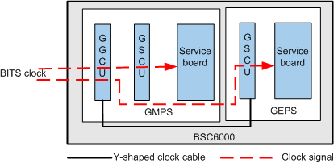

This describes the clock synchronization in the GMPS/GEPS in A over IP configuration mode.
In A over IP configuration mode, the BSC cannot use the line clock. Figure 1 shows the clock synchronization in the GMPS/GEPS that uses the BITS clock source.
Figure 1 BSC clock synchronization procedure (BITS clock source)

The clock signals in the GMPS/GEPS are processed in the following manner:
- The BITS clock signals are transmitted to the GGCU through the GGCU panel.
- After a phase lock in the GGCU, the BITS clock signals change into the 8 kHz clock signals.
- In the GMPS, the 8 kHz clock signals are transmitted from the GGCU to the GSCU through the backplane.
- The 8 kHz clock signals are transmitted from the GGCU panel in the GMPS to the GSCU in the GEPS through a Y-shaped clock cable.
- The GSCU in the GMPS/GEPS transmits the 8 kHz clock signals to the other boards in the GMPS/GEPS through the backplane.
Copyright © Huawei Technologies Co., Ltd.